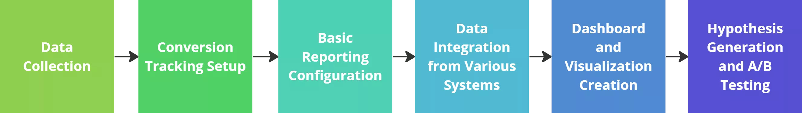

Этапы Web-аналитики
Веб-аналитика работает в несколько этапов, которые помогают собирать и анализировать данные для улучшения эффективности сайта. Вот подробнее об этих этапах:
- Сбор данных: Первый этап — это сбор необходимых данных о посетителях сайта. Обычно он заключается в установке кода аналитики (например, Google Analytics) на страницах сайта, чтобы отслеживать действия пользователей, включая просмотр страниц, клики, конверсии и другие важные события.
- Настройка трекинга конверсий: Достижения целевых действий на сайте, помогает отслеживать, анализировать целевые действия пользователей и оценивать эффективность сайта. Конверсией может быть покупка, заполнение формы, подписки и т.д.
- Настройка базовой отчетности:После сбора данных и трекинга конверсий необходимо настроить базовую отчетность. В первую очередь — ключевые показатели производительности (KPIs) и отслеживание метрик, которые позволят оценить эффективность сайта и маркетинговых усилий.
- Объединение данных из разных систем: Часто веб-аналитика требует объединения данных из различных источников, например, данных из сторонних рекламных систем, CRM-систем или других инструментов. Это позволяет получить более полную картину о взаимодействии пользователей с сайтом и оценить эффективность маркетинговых кампаний.
- Создание дашбордов и визуализаций:Визуализации помогают легко воспринимать данные и делать выводы. Это могут быть графики, диаграммы, сводные таблицы и другие инструменты, помогающие понять ключевые тренды и показатели эффективности.
- Создание гипотез и А/В-тестирование: Гипотезы позволяют формулировать предположения о возможных улучшениях на сайте, а А/В-тестирование позволяют сравнить разные варианты и определить, какой работает лучше на основе собранных данных.